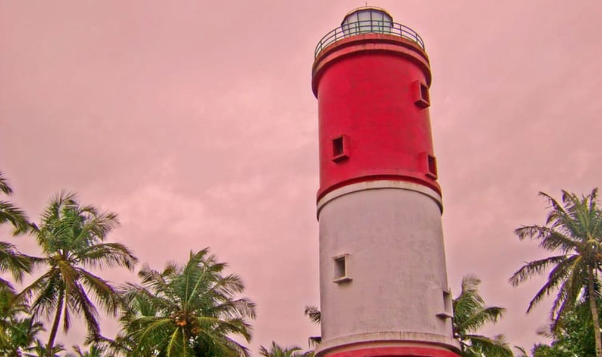

01.St.Angelo Fort

Considered as one of the most historic sites in Kannur, the St. Angelo Fort was constructed by the first Portuguese viceroy of India. The fort is triangular in shape appears as a massive yet magnificent structure standing at the helm of the ruthless sea.
The laterite walls made of stone lend it an even more imposing air and it is a must-visit destination for architecture students. The sea wall segregating the fort from the sea provides breathtaking views of the Mopilla Bay. Visit the fort for taking a relaxing walk in the complex and enjoy stunning views of the Arabian Sea.
Location: 2.0 km from Kannur bus stand.
Timings:8 AM to 6 PM, every day
Entry fee: INR 10.
02.Muzhappilangad Beach

Famous as Kerala’s only drive-in beach, the Muzhappilangad offers some of the most stunning views of the yellow and orange sun setting along the golden sandy beaches of Malabar coast.
The 4 km stretch of land running along the ocean is perfect for taking a romantic, leisurely stroll with your partner or just drive on the beach and soak in the naked natural splendour around.
Photography enthusiasts can take breathtaking shots of the ocean and food lovers can munch on authentic Malabar snacks sold on the beach.
Location:
13.8 km from Kannur bus stand.
Timings:No timing restrictions
Entry fee: There is no fee charged to enter the beach but if you want to drive a vehicle on the beach, you are charged INR 10.
03.Kannur Light House

Towering at the height of 75 feet, the lighthouse in Kannur is the first lighthouse to be constructed in Kerala. First built in 1903, the place has a history as well as cultural significance. The vantage point offers spectacular and awe-inspiring views of the entire district of Kannur, the vast expanse of the Arabian sea, and the Baby beach.
The bewitching backdrop delights the viewer and the feeling the wind on your face at the highest point will leave you truly breathless. Tourists can also enjoy a leisurely walk in the well-maintained gardens and enjoy the mesmerizing water fountain show in the evenings.
Location: 2.6 km from Kannur bus stand
Timings:9 AM to 6 PM, every day
Entry fee:No entry fee.